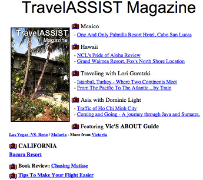
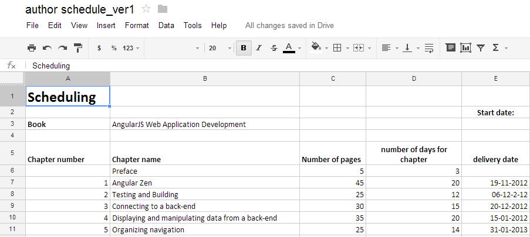

Building SPAs with AngularJS
Introduction and intermediate topics
My name is Pawel Kozlowski
I edit text files for living
I'm into climbing and open-source

AngularJS, angular-app, AngularUI, Karma runner, InteliJ live tpls, MongoLab wrappers...

Tell us more about yourself
- Your name
- Your experience with:
- JavaScript and web development in general
- AngularJS
- Unit testing and TDD
- Web applications where you want to use AngularJS
- Your expectations regarding this workshop
Organizational details
- 3 days, 09:00 ~ 17:00
- Lunch break 13:00 - 14:00
- 2 other breaks (15-30 min) during the day
- Please, switch off your mobile devices (if possible)
Please, do ask questions

- Short ones at any time
- A dedicated slot for more involved topics
- I'm here to address your concerns, not present my material
Tools and libraries
- Libraries:
- AngularJS
- Jasmine - BDD testing framework
- moment.js - date / time manipulation helper
- Bootstrap CSS - so things look decent
- Tools:
- node.js / npm to run build and examples
- Gulp.js as the stream-based build tool
- Karma-runner as a in-browser test runner
Exercises and this presentation
https://github.com/pkozlowski-opensource/js-with-ng-introWorking on exercises
- All exercises are in the /exercises folder
- You usually need to "fill in blanks"
- A solution is always provided in the "solution" subfolder
- Useful commands:
gulp www- start built-in web servergulp test- run testsgulp tdd- run tests on each code change
- I highly encourage you to pair-program during exercises
Meet AngularJS
AngularJS framework
- Complete solution for in-browser web applications
- Created and maintained by Google
- Open source, many contributors from outside of Google
- Started over 4 years ago, exploding popularity
- Revolutionary in several aspects
- Strong focus on testability
Be ready to rewrite your brain!
I hereby declare AngularJS to be MVW framework - Model-View-Whatever. Where Whatever stands for "whatever works for you".
Igor Minar
and doubt from time to time...

Hello, {{name}}!
<!DOCTYPE html>
<html ng-app>
<head>
<script src="../../lib/angular.js"></script>
</head>
<body>
<h1>Hello, {{name}}!</h1>
<input type="text" ng-model="name"/>
</body>
</html>
Bits and pieces
Exercise
Create your first "Hello World!" application with AngularJS!
AngularJS rendering engine
From static web to... web applications!
|  |  |
From declarative HTML to...
|
|
We need a superheroic framework!

But we've got jQuery!
- Remedy for the DOM insanity
- Focused on DOM querying and manipulation
- The programming model didn't fundamentally change...
$(function(){
$('#greeting').text('Hello World!');
});
We need better abstractions
"Angular is what the web browser would have been, had it been designed for applications"
Miško Hevery
Hello {{name}}!Live coding!
To see some of AngularJS concepts in action.
It is not string-based template!
String-based templates
|
AngularJS
|
Rendering engine - takeaways
- Automatic refresh, no need to say "render"
- Declarative UI driven by model
- Model is just plain JavaScript
Exercise
Make the user-management page live.
Check tests and make sure that they pass (let's setup the test env together!).
Modules and Dependency Injection
"I was expecting a paradigm shift, and all I got was a lousy constructor"
A bit of theory
$provideallows us to register recipes for object creation- "Recipes" are grouped into modules
$injectorgives access to singletons produced based on those recipes- Singleton instances are called "services"
We need a module first
angular.module('app', []);
DI in AngularJS accepts various recipes
- Values
- Services
- Factories
Values
angular.module('app', []).value('userstorage', new UserStorage());Services
angular.module('app', []).service('userstorage', UserStorage);Factoriess
angular.module('app', []).service('factory', function(){
return new UserStorage();
// or simply define it here
});In reality things are a bit more complex...
2-phase lifecycle
- Configure
- Run
Modules accept various recipes
- Values
- Services
- Factories
- Constants
- Providers
Constants
angular.module('userstorage', [])
.constant('SEQUENCE_START', 1)
.factory('UserStorage', function(SEQUENCE_START) {
// I can configure my service based on the constant
var sequence = 1;
// AngularJS services are singletons
var UserStorage = {};
...
return UserStorage;
});
// I can re-define a constant closer to my application module
angular.module('app', ['userstorage']).constant('SEQUENCE_START', 10);Providers
angular.module('userstorage', [])
.provider('UserStorage', function() {
var settings = {
seqStart: 1
};
return {
setSequenceStart: function(seqStart) {
settings.seqStart = seqStart;
},
$get: function() {
var UserStorage = {};
...
return UserStorage;
}
}
});
// I can configure a provider before it gets instantiated
angular.module('app', ['userstorage'], function(userstorageProvider) {
userstorageProvider.setSequenceStart(10);
});Modules can depend on other modules
angular.module('app', ['userManagement', 'commonHelpers'])
Modules do not _not_ form namespaces!
angular.module('app', ['foo', 'bar']);
angular.module('foo', []).service('myService', FooService);
angular.module('bar', []).service('myService', BarService);But they do prevent pollution of the global JS namespace.
Registering controllers on modules
angular.module('users', [])
.controller('UsersCtrl', function ($scope, UserStorage) {
$scope.cleanUser = {};
$scope.users = UserStorage.getAll();
$scope.save = function () {
UserStorage.save($scope.user);
$scope.cleanUser = {};
$scope.clear();
$scope.users = UserStorage.getAll();
};
AngularJS modules and testing
beforeEach(module('users'));
// let's load real dependencies so those are called if not mocked
beforeEach(module('userstorage'));
beforeEach(inject(function (_$rootScope_, _$controller_, _UserStorage_) {
$scope = _$rootScope_;
// now it should be more obvious why we use underscores
$controller = _$controller_;
userStorage = _UserStorage_;
}));Loading modules on demand
The bitter truth is that it is not supported...
Exercise
Turn code from the previous exercise into its modular equivalent.
Check tests to see various mocking / spying techniques.
Make the tests pass.
More on the rendering engine
Filters

Filters
{{user.birthDate | date:'YYYY-MM-dd'}}
{{date(user.birthDate, 'YYYY-MM-dd')}}
- Global UI formatting / transforming functions
- Built-in filters: formatting and arrays filtering
- Very easy to unit-test
Formatting filters
<td>{{user.birthDate | date:'YYYY-MM-dd'}}</td>Examples of built-in formatting filters:
- currency
- date
- json
- lowercase, uppercase
- number
Filtering filters
<tr ng-repeat="user in users | filter:filterCriteria | limitTo:20">
<td>{{user.id}}</td>
<td>{{user.login}}</td>
<td>{{user.name}}</td>Examples of built-in formatting filters:
- filter
- limitTo
- orderBy
Filters best practices
- UI-focused transforming functions
- Small, fast, synchronous
- No side effects
- Idempotent
- Model-focused, no DOM manipulation
Using filters from JavaScript code
angular.module('myDate', [])
.filter('myDate', function (dateFilter, $filter) {
return function (inputDate) {
return dateFilter(inputDate, 'YYYY-MM-dd');
//return $filter('date')(inputDate, 'YYYY-MM-dd');
};
});
Exercise
Write a pagination filter, similar to the limitTo one,
that allows limiting an array to both boundaries.
Write unit tests and code for this filter using TDD (let's setup the dev env together).
{{ users | pagination:pageNo:10}}"limitTo filter should have a left and right bound"
Talking to a back-end

Restful API with MongoLab
REST MongoDB API in the cloud
$http service
return $http.get(BASE_URL, {params: {
apiKey: API_KEY
}}).then(function(response) {
return response.data;
});$http interactions are fully asynchronous

We need better abstractions to work in the asynchronous World
- When the $http method call ends, results are not ready
- When an error occurs there is no-one to catch it
2 ways dealing with asynchronous code
- Callbacks
- Promises
Callbacks are not cool

- Chained calls ("callbacks hell")
- Error handling
- Parallel calls
$http with the promise APi
Service
return $http.get(BASE_URL, {params: {
apiKey: API_KEY
}}).then(function(response) {
return response.data;
});Controller
UserStorage.getAll().then(function (users) {
$scope.users = users;
});$http building blocks
$http depends on $httpBackend
Testing interactions with $http
it('should support querying users by id', function () {
$httpBackend.expectGET(withUrl('/123')).respond(testUser);
userStorage.getById('123').then(function(userById) {
expect(userById._id.$oid).toEqual('123');
}, onFail);
$httpBackend.flush();
}); afterEach(function() {
$httpBackend.verifyNoOutstandingExpectation();
$httpBackend.verifyNoOutstandingRequest();
});2 ways of expressing expectations
Code oriented vs. back-end oriented
expect vs. when(or application-focused vs. backend-focused)
Exercise
Change the UserStorage service to work with the MongoLab REST API.
Check tests and make them pass.
Promises with $q
Promises
The thing is, promises are not about callback aggregation. That's a simple utility.
Promises are about something much deeper, namely providing a direct correspondence between synchronous functions and asynchronous functions.
Domenic Denicola in You're Missing the Point of Promises
Keeping sanity in the async world
Results are available in a different call stack...
- "Callbacks hell"
- There is no one to catch an exception...
- Calling functions in a loop etc.
Promises in AngularJS
The $q service based on Kris Kowal's q library
https://github.com/kriskowal/qLet's see some code
var Person = function (name, $log) {
this.eat = function (food) {
$log.info(name + " is eating delicious " + food);
};
this.beHungry = function (reason) {
$log.warn(name + " is hungry because: " + reason);
};
};Basic usage scenario
it('should illustrate basic usage of $q', function () {
//deferred represents a task that will complete (or fail) in the future
var pizzaOrderFulfillment = $q.defer();
//the task in the future comes with a promise of task completion (or failure)
var pizzaDelivered = pizzaOrderFulfillment.promise;
pizzaDelivered.then(pawel.eat, pawel.beHungry);
pizzaOrderFulfillment.resolve('Margherita');
$rootScope.$digest();
expect($log.info.logs).toContain(['Pawel is eating delicious Margherita']);
});There are always 2 actors
- I control the future (.resolve, .reject)
- I depend on future results (.then)
it('should illustrate promise resolution in a service', function () {
var pizzaDelivered = pizzaPit.takeOrder('Margherita');
pizzaDelivered.then(pawel.eat, pawel.beHungry);
pizzaPit.deliverOrder();
expect($log.info.logs).toContain(['Pawel is eating delicious Margherita']);
}); try {
pawel.eat(pizzaPit.takeOrder('Margherita'));
} catch (e) {
pawel.beHungry(e.msg);
}Callback aggregation
it('should allow callbacks aggregation', function () {
var pizzaDelivered = pizzaPit.takeOrder('Margherita');
pizzaDelivered.then(pawel.eat, pawel.beHungry);
pizzaDelivered.then(pete.eat, pete.beHungry);
pizzaPit.deliverOrder();
expect($log.info.logs).toContain(['Pawel is eating delicious Margherita']);
expect($log.info.logs).toContain(['Peter is eating delicious Margherita']);
}); try {
var pizza = pizzaPit.takeOrder('Margherita');
pawel.eat(pizza);
pete.eat(pizza);
} catch (e) {
pawel.beHungry(e.msg);
pete.beHungry(e.msg);
}Promise chaining
it('should illustrate successful promise chaining', function () {
var slice = function(pizza) {
return "sliced "+pizza;
};
pizzaPit
.takeOrder('Margherita')
.then(slice)
.then(pawel.eat, pawel.beHungry);
pizzaPit.deliverOrder();
expect($log.info.logs).toContain(['Pawel is eating delicious sliced Margherita']);
}); try {
pawel.eat(slice(pizzaPit.takeOrder('Margherita')));
} catch (e) {
pawel.beHungry(e.msg);
}Error recovery
it('should illustrate recovery from promise rejection', function () {
var retry = function(reason) {
return pizzaPit.takeOrder('Margherita').then(slice);
};
pizzaPit.takeOrder('Capricciosa').then(slice, retry).then(pawel.eat, pawel.beHungry);
pizzaPit.problemWithOrder('no Capricciosa, only Margherita left');
pizzaPit.deliverOrder();
expect($log.info.logs).toContain(['Pawel is eating delicious sliced Margherita']);
}); try {
pawel.eat(pizzaPit.takeOrder('Capricciosa'));
} catch (e) {
pawel.eat(pizzaPit.takeOrder('Margherita'));
}Explicit rejection
it('should illustrate explicit rejection in chain', function () {
var explain = function(reason) {
return $q.reject('ordered pizza not available');
};
pizzaPit.takeOrder('Capricciosa').then(slice, explain).then(pawel.eat, pawel.beHungry);
pizzaPit.problemWithOrder('no Capricciosa, only Margherita left');
expect($log.warn.logs).toContain(['Pawel is hungry because: ordered pizza not available']);
}); try {
pawel.eat(pizzaPit.takeOrder('Capricciosa'));
} catch (e) {
throw new Exception('ordered pizza not available');
}More on $q
- $q.when(value) - wraps JavaScript value as a promise
- $q.reject(reason) - wraps JavaScript value as a rejected promise
- $q.all(promise1, promise2) - "parallel calls"
Working with RESTful endpoints
or DRY-ing $http interactions

Code interacting with RESTful APIs gets very repetitive
- Similar URLs
- A fixed set of actions and HTTP verbs
- Similar data serializing / parsing
AngularJS has 2 solutions
- ngResource
- custom abstraction over $http
ngResource
ngResource philosophy
- Generic - aims to work with any REST backend
- Opinionated:
- all the URLs need to follow a certain pattern
- CRUD operation names and their mapping to HTTP verbs
- pre-defined response format
- Table Data Gateway and Active Record patterns
Show me the code!
var User = $resource('https://api.mongolab.com/api/1/databases/' + MONGOLAB_CONFIG.DB_NAME + '/collections/users/:id',
{
apiKey: MONGOLAB_CONFIG.API_KEY,
id: '@_id.$oid'
}, {
update: {
method: 'PUT',
transformRequest: function (data) {
return JSON.stringify(angular.extend({}, data, {_id: undefined}));
}
}
});More generally:
ResourceClass = $resource('http://some/urls/with/:param1?other=:param2',
{ param1: '@id', param2: 'some fixed value'},
{ // custom actions go here});
$resource returns a constructor
var User = $resource('http://...', {...}, {...});
//get all users
User.query({}, function(users){
//do something with users here...
});
//create and save a user
var user = new User({name: 'Peter'});
user.$save();
//later on we can delete it
user.$remove();
Methods generated in a new resource "class"
- "Class" methods:
User.get(GET, object)User.query(GET, array)User.save(POST, object)User.remove(DELETE, object)
- "Instance" methods:
user.$save(POST, object)user.$remove(DELETE, object)
- There is no default
updatemethod!
Usage scenarios - instance methods
$scope.remove = function (user) {
user.$remove(function() {
refreshUsersList();
});
};Usage scenarios - class methods
function refreshUsersList() {
$scope.users = User.query({});
console.log($scope.users[0]);
}
Is it synchronous??? Nope...
function refreshUsersList() {
User.query({}, function(users) {
$scope.users = users;
console.log($scope.users[0]);
});
}
Exercise
Create the User resource and use it from a controller
Building your own persistence layer
Potential problems with $resource
- Limited control over URLs and HTTP verbs
- Pre-defined response formats (especially for collections)
- Promise support added as an afterthought
Custom ngResource-like factory
It is (rather) easy to create a custom, $resource-like wrapper
- Address $resource limitations
- First-class promises support
- Custom actions / methods
The ideal solution
Storage service
angular.module('userstorageHttpResource', ['mongolab'])
.factory('User', function ($mongolabResource) {
return $mongolabResource('users');
});Controller
function refreshUsersList() {
User.getAll().then(function (users) {
$scope.users = users;
});
} $scope.save = function () {
$scope.user.$save().then(function () {
$scope.cleanUser = new User({});
$scope.clear();
refreshUsersList();
});
};Let's go over the implementation code together
Exercise
Inspect code of the custom MongoLab resource.
Use it from a controller.
URLs and navigation

It all started good...
with a URL pointing to _one_ resource on a server...
http://www.hotnews.com/sport/football.htmlDynamic sites have broken URL model...
and back / forward buttons...
and refresh...
http://www.hotnews.com/sport.asp?category=footballAJAX made the situation only worse...
or have broken things differently...
http://www.hotnews.com/sport.html#footballBasic problem:
there is _one_ URL to denote current _state_ of an application
- How to re-create application's state based on the URL?
- How to change the URL in response to application's state changes?
Ideally we would like to have "clean" URLs (HTML5 mode):
without making round-trips to the server...
and still make URLs "bookmarkable"
But we might need to stick to the "hashbang" mode
AngularJS makes it easy to work with "client-side" URLs
The $location service
| HTML5 | Hashbang | |
|---|---|---|
| $location.path() | /users/list | /users/list |
| $location.search().sort | name | name |
| $location.hash() | top | top |
We could build a navigation system based on the $location + ngInclude primtives...
Routing

$routeProvider
angular.module('app', ['ngRoute', 'usersNgRoute'])
.constant('MONGOLAB_CONFIG', {
API_KEY: '4fb51e55e4b02e56a67b0b66',
DB_NAME: 'roche'
})
.config(function ($routeProvider) {
$routeProvider.when('/users/list', {
templateUrl: 'list.html'
})
.when('/users/edit/new', {
templateUrl: 'edit.html'
})
.when('/users/edit/:id', {
templateUrl: 'edit.html'
})
.otherwise({
redirectTo: '/users/list'
});
});Route's content gets included using ngView
Advantages
- Structures the whole application
- Makes it easy to split HTML / JS into smaller chunks
- Handles URL parsing
- Handles transitions in response to $location changes
Let's see the live example and some more code
Exercise
Introduce routing to our demo application.
It is all good, but...

We need to synchronize data retrieval with view changes
Promise API to the rescue
$routeProvider.when('/users/list', {
templateUrl: 'list.html',
controller: 'UsersListCtrl',
resolve: {
users: function(User) {
//if we return a promise, route change will be
//suspended until a promise is resolved
return User.getAll();
}
}
});On top of this we can now inject data to a controller
.controller('UsersListCtrl', function ($scope, $location, User, users) {
$scope.users = users;
$scope.edit = function (user) {
$location.path('/users/edit/' + user.getId());
};making a controller easier to test
Let's see the live example and some more code
Exercise
Introduce resolves into routing.
$routeProvider limitations
There is only one "hole" to fill in (ngView)
UI-router and alternative solutions
- ui-router - community driven alternative
- Routing system pending re-design in AngularJS 2.0
Internationalization

2 main aspects of i18n
- Regional settings (date, number format, currency symbols etc.)
- Translations (templates, error messages etc.)
Determining / switching locale
- Include a "proper" file
- Declare a dependency on the ngLocale module (rather "static" method)
- en-us is a default locale if none included
<head>
<script src="../../lib/angular.js"></script>
<script src="../../lib/angular-locale_pl-pl.js"></script>
<script src="i18n.js"></script>
<script>
angular.module('app', ['ngLocale', 'i18n']);
</script>
</head>The $locale module
- $locale.id is the only public API
- more interesting settings extracted from the closure library
- additional settings can be used in custom directives / filters
Built-in filters take $locale into account
- date - named date formats
- number - number format
- currency - this one is dangerous, probably better not to use it
Named date formats
Now: {{now | date:'fullDate'}}Translations
- Templates
- JavaScript-driven content (error messages etc.)
Translating templates
- Client-side
- Server-side
- In any case we need to have:
f(key, locale) => translation
Handling translations client-side - filters
.filter('i18n', function ($locale, TRANSLATIONS) {
return function (input) {
if (!angular.isString(input)) {
return input;
}
return TRANSLATIONS[$locale.id][input] || '?' + input + '?';
};
});
An "obvious" choice.. that doesn't scale...
Handling translations client-side - directives
This doesn't work either:
- Hard to combine translated / non-translated strings
- Can't be used to translate strings in attributes
angular-translate
angular-translateThe most popular library based on the filter / directive idea
Handling translations server-side
Basic idea:
- Use build-time templates translation
- Generate a set of templates for each locale
- Pre-load templates bundle
This is a preferred method, but requires a bit of up-front build setup.
It also make it hard to switch locale on the fly
Exercise
Include alternative locale (pl-pl) in the simple test page and observe its effect on various filters.